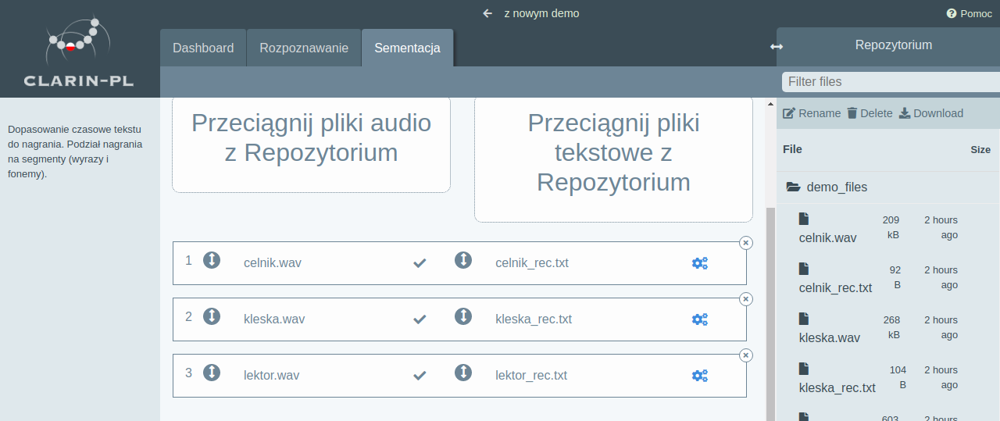
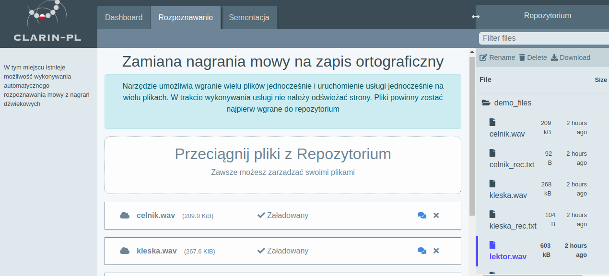

Wprowadzenie
PJATK, jako jedna z niewielu Uczelni Wyższych w Polsce, zajmuje się analizą sygnału mowy. Celem naszych badań jest pomoc osobom zajmującym się naukami humanistycznymi oraz społecznymi w uzyskiwaniu jak największej ilości informacji z posiadanych nagrań dźwiękowych (nagrań mowy) oraz informacji tekstowych.
Wiele danych wykorzystywanych w naukach humanistycznych i społecznych jest przechowywanych w formie nagrań audio. Przykładami mogą być nagrania radiowe bądź telewizyjne, wywiady, przemowy (parlamentu, publiczne wystąpienia itp.), wykłady, filmy, literatura czytana i inne nagrania mowy. Głównym problemem jednak w przetwarzaniu danych akustycznych jest to iż wymagają znacznie więcej czasu niż tradycyjne dane tekstowe. Przetwarzanie tego typu danych wymaga przynajmniej podstawowego "know-how" w zakresie przechowywania tego typu danych ale również znacznego wysiłku aby wywnioskować z nagrań informacje nadające się do publikacji. Z tego powodu wydobywanie informacji z nagrań dźwiękowych bywa pomijane przez badaczy którzy albo nie posiadają wystarczającej ilości czasu lub nie chcą borykać się z w/w problemami. Dlatego też naszym głównym celem jest stworzenie darmowych oraz łatwo dostępnych narzędzi dla badaczy z dziedzin humanistycznych oraz społecznych. Celem naszych badań jest pomoc w uzyskaniu jak największej ilości informacji z posiadanych nagrań dźwiękowych (nagrań mowy) oraz informacji tekstowych. W PJATK budujemy połączenia łączące dane humiastyczne z technologią.
Tworzenie korpusów oraz wydobywanie z nich informacji naturalnie wymaga narzędzi. Istotny jest dla nas łatwy dostęp do nich dostęp. Dlatego też obecnie skupiamy się również na tworzeniu łatwo dostępnych oraz zrozumiałych interfejsów, aby narzędzia były dostępne dla każdego, nie tylko dla informatyków. Wyrazem tego dążenia jest obecny oraz nowy serwis www udostępniające opisywane dalej narzędzia mowy. Obecnie można mieć do nich dostęp za pośrednictwem dwóch serwisów:
- https://mowa.clarin-pl.eu (wersja starsza)
- https://mowa.clarin-pl.eu:8433/ (nowsza wersja w wersji beta)
Nasz zespół składa się z 5 członków:
- Prof. dr hab. Krzysztof Marasek Kieronik projektu po stronie PJATK
- dr inż. Danijel Korzinek Analiza i rozpoznawanie mowy
- dr inż. Łukasz Brocki Rozpoznawanie mowy
- dr inż. Krzysztof Wołk Tłumaczenie maszynowe
- mgr inż. Mariusz Kleć Wydobywanie informacji muzycznej (MIR), deep learning, web development
Korpusy
Nasz zespół zajmuje się tworzeniem oraz przetwarzaniem korpusów nagrań mowy. Korpusy służą do wytrenowania określonych modeli oraz wydobywania z nich informacji.Korpus Danych Studyjnych
Jesteśmy autorem korpusu nagrań studyjnych który udostępniamy pod tym linkiem.. Korpus ten posłużył do wytrenowania systemu rozpoznawania mowy dla języka polskiego (bazującego na sytemie Kaldi)
Wiele narzędzi wspomnianych wcześniej wymaga dużego zbioru danych trenujących w postaci nagrań audio. Pozyskanie dobrej jakości nagrań mowy w danym języku jest kosztowne i często nieosiągalne przez większość badaczy. Do tej pory nie istniał darmowy, wysokiej jakości korpus nagrań mowy Polskiej z odpowiednio dużym słownikiem.
Celem było jak największe zróżnicowanie zarówno pod kątem słownictwa jak również liczby osób czytających aby uchwycić ich różnorodność wymowy. Warto przy tym zwrócić uwagę iż była to mowa czytana, przez co transkrypcja była już dana na samym początku. Korpus stanowi nagrania mowy niejako “wymuszonej”, nie jest to mowa spontaniczna. Teksty były czytane z kartki, dlatego korpus ma większy sens do analizy fonetycznej aniżeli do socjologicznej czy psychologicznej. Korpus ten posłużył do wytrenowania systemu rozpoznawania mowy dla języka polskiego o którym mowa w dalszej części opracowania.
Korpus został nagrany w laboratorium dźwiękowym na terenie PJATK z wykorzystaniem mikrofonów studyjnych. W nagraniach brało udział 317 mówców w 554 sesjach, gdzie każda sesja składała się z 20 czytanych zdań oraz 10 fonetycznie bogatych słów pojedynczych. W sumie zostało nagranych 56 godzin mowy składającej się z 356676 słów ze słownika o wielkości 46361. Obecnie korpus jest dostępny do łatwego przeglądania on-line za pośrednictwem systemu EMU-SDMS (EMU Speech Database Management System). Środowisko EMU pozwala na łatwe przeglądanie danych oraz wykonywanie obliczeń statystycznych dzięki integracji z środowiskiem R.
Korpus PKF
Korpus Polskich Kronik Filmowych uwzględnia nagrania w formie audio oraz wideo z lat 1945-1962. Korpus charakteryzuje się archaicznym językiem oraz relatywnie niską jakością nagrań co spowodowało iż był wymagającym problemem dla systemu rozpoznawania mowy. Korpus zawiera 10 minutowe fragmenty wiadomości, podobne do kronik filmowych wyświetlanych w kinie na całym świecie w tym samym okresie. Kronika została stworzona przez Wytwórnie Filmów Dokumentalnych i Fabularnych WFDiF w Warszawie. Obecnie prawa do nagrań należą do Filmoteki Narodowej FINA.
Przeważnie jedna kronika zawierała pięć części, każda opisująca inny temat ale wszystkie były czytane przez jednego mówcę. Jedynie okazjonalnie wtrącane były wywiady oraz przemowy innych ludzi. W niektórych przypadkach, takich jak międzynarodowy dzień pracy, cała kronika była podyktowana tylko tym wydarzeniom. Oprócz kin, kroniki były również prezentowane w 1960 roku przez Polską telewizję.
PKF są wyjątkowo użytecznym źródłem dla środowiska naukowego z powodu ich bogatej zawartości kulturalnej oraz historycznej. W komunistycznej Polsce kroniki filmowe były często używane jako narzędzie propagandowe. Zawierają komentarze, opinie dziennikarzy, obecne wydarzenia sportowe, ekonomiczne oraz kulturowe z kraju oraz ze świata. Dodatkowo dane mogą być anotowane wieloma meta-informacjami jak czas czy miejsce opisywanych wydarzeń co stanowi wyjątkowo wartościowe źródło do różnych badań społeczno językowych.
Było to jednym z powodów dla których zdecydowano się włączyć kroniki do systemu ChronoPress. Główną zaletą tego systemu jest dodanie informacji czasowych do korpusu. Podczas gdy standardowy korpus może zawierać materiały z różnych źródeł oraz z różnych okresów czasowych, użycie takiego korpusu może prowadzić do niepoprawnych wniosków. Korpus uporządkowany chronologicznie mówi nam nie tylko jaki jest kontekst wypowiadanych słów ale także kiedy były one używane. Pozwala nam to nie tylko uniknąć wyżej wspomnianego problemu ale także dostarcza wyjątkowego narzędzia do badania rozwoju języka w czasie.
Przy okazji korpus posłużył do stworzenia narzędzia automatycznej transkrypcji które może zostać wykorzystane do transkrypcji podobnych nagrań. Aby ułatwić zadanie, zdecydowano iż brane pod uwagę będą jedynie dane z okresu 1945-1962 (aby korelowały z innymi zasobami dostępnymi w ChronoPress) oraz jedynie głos narratora był brany pod uwagę. Jednym z głównych wyzwań w osiągnięciu tego celu był archaiczny język oraz niskiej jakości oraz niestabilny sygnał audio. Dodatkowo, prawie wszystkie filmy cechowała muzyka w tle która w momencie trwania umowy była wyciszona ale podgłaszania gdy było jej brak. Innym problemem było występowanie wielu języków oraz mówców w niektórych filmach. Pomimo tego korpus posiada wiele zalet. Wiele filmów było czytanych przez tą samą grupę dobrze znanych mówców. Dodatkowo domena jest stosunkowo wąska oraz dobrze zdefiniowana. Używając kolekcji przetranskrybowanych kronik, oszacowaliśmy wielkość słownika który wynosił mniej niż 50k wyrazów. W tym celu przetranskrybowane zostały tylko części zawierające komentatora (które stanowiły większość nagrań). Inne części audio (muzyka, pozostali mówcy) zostali ignorowanie.
Sporym minusem całego projektu była nie możliwość włączenia materiału audio (ze względu na ograniczenia licencyjne). Jedynie transkrypcje mogą zostać opublikowane jako te uzyskane z ramach projektu CLARIN. Jest to duże ograniczenie ponieważ wierzymy że materiał audio mógłby dostarczyć wyjątkowo bogatego źródła do badań fonologii języka Polskiego w tym okresie historycznym.
Wynikowe transkrypcje zostały włączone do repozytorium projektu CLARIN-PL. Wytrenowany model zwraz z systemem do transkrypcji oraz segmentacji jest przechowywany w formie obrazu Docker, ze szczegółami dostępnymi w publicznym repozytorium.
Korpus Sejm
Transkrypcja rozmów Parlamentarnych to popularna domena w automatycznym rozpoznawaniu mowy. Rządy wielu krajów wymagają transkrypcji oficjalnych spotkań parlamentarzystów oraz ich upublicznienia. Większość tej pracy jest ciągle wykonywane manualnie. Obecnie obrady Senatu są dostępne online w postaci audio, video oraz tekstowej. Patrząc na przykłady innych, akustycznie podobnych domen do nagrań Parlamentarnych, najbliższe byłyby nagrania ze spotkań gdzie częste przerywanie przez innych oraz mówienie przez kilka osób jest dość częstym zjawiskiem. Z drugiej strony, język oraz używane słowa są kompletnie różne. Bliższym w tym aspekcie byłyby nagrania wykładów. Lecz odbywałyby się w znacząco różnych warunkach akustycznych z prawie nie przerywą przemową jednego mówcy. Widać tutaj iż transkrypcja nagrań sejmowych jest unikatowym zadaniem. Podzbiór nagrań audio z Senatu, wraz z ich odpowiadającym transkrypcjom, został wybrany do wytrenowania modelu akustycznego oraz językowego. Wiele nagrań zostało opublikowanych na stronie Senatu, Parlamentu oraz na stronie kanału TVP Parlament.
Celem było wsparcie już istniejącego systemu prezentującego podpisy filmowe na stronie Polskiego senatu. Strona ta wykorzystuje nagrania wideo oraz transkrypcje jako osobne dokumenty. Nowo stworzony system może być użyteczny jako w pełni funkcjonalne narzędzie do automatycznego wyświetlania transkrypcji, do czasu gdy manualne transkrypcje nie staną się dostępna (zwykle 1-2 dni później). Ponadto może być użyty jako narzędzie segmentacji do przypisywania kodów czasowych do już istniejących manualnych transkrypcji.
Przygotowanie korpusu było czasochłonnym zadaniem, ponieważ oficjalne transkrypcje nie zawierały dokładnych transkrypcji nagrań audio. Były pisane w sposób bardziej odpowiadający poprawności gramatycznej oraz w celu poprawności czytelności pliku PDF niżeli dokładnego odwzorowania mówionych słów. Dlatego też dane musiały być prze-transkrybowane przez grupę zatrudnionych na kontrakcie osób. Usuwali oni również fragmenty audio zawierające duże fragmenty szumu tła, podwójną oraz niezrozumiałą mowę aby ułatwić proces transkrypcji. Duża część danych została również anotowana informacjami o mówcy (nazwa, płeć) aby ułatwić normalizację oraz adaptację modelu akustycznego.
Większość danych zostało pozyskanych dzięki porozumieniu między Polskim Senatem oraz PJATK. Wiele nagrań jest często kiepskiej jakości, realizowanych przy użyciu biurkowych mikrofonów. Wprowadza to wiele zniekształceń, pogłosu oraz szumu tła. Dodatkowo do przetrzymywania nagrań używany jest stratny format plików. W sumie, zostało przygotowanych około 97 godzin nagrań zarówno z Sejmu jak i z Senatu, z 488 różnymi mówcami (w większości mężczyzn). Ze wszystkich zostało wybranych 10 mówców losowo jako zbiór testowy (około 2 godziny nagrań).
Pozyskanie wystarczającej ilości danych tekstowych okazał się być nieco bardziej skomplikowany. Elektroniczne korpusy tekstowe są trudne do uzyskania dla języka Polskiego z powodu małej ilości prób cyfryzacji prac pisanych oraz restrykcyjnych praw autorskich. Dodatkowo, nawet jeżeli istnieją tekstowe korpusy, posiadają ograniczony dostęp, zmuszając naukowców do odtwarzania ich własnych zbiorów każdym razem. Początkowo, wystarczająco duży korpus transkrypcji został pozyskany dzięki pomocy biura Senatu, obejmującego ponad 5 milionów słów. Korpus ten został później rozszerzony transkrypcjami z sesji Sejmowych oraz publicznie dostępnej części National Corpus of Polish (NKJP). Dane te wymagały segmentacji oraz normalizacji aby rozszerzyć wszystkie liczby oraz skróty do ich mówionych form w odniesieniu do zasad gramatyki. Tego typu normalizacja jest z reguły przeprowadzana manualnie jednak przy takim rozmiarze danych niezbędnym było stworzenie automatycznego narzędzia uzgadniającego formę danego wyrazu. Zostało to rozwiązane przy użyciu autorskiego oprogramowania wytrenowanego na ręcznie przypisanych zasadach gramatycznych przypisanych do rozszerzeń numerycznych. Testy pokazały 10% współczynnik pomyłek. Podsumowując, większość eksperymentów zostało przeprowadzonych na korpusie zawierającym około 145 milionów wyrazów. Korpus został zamieniony na małe litery a wszystkie liczby i skróty rozszerzone do ich pełnych, wypowiadanych gramatycznie form.
Największy problem z segmentacją jest taki że manualne transkrypcje nie dokładnie reprezentują co jest aktualnie wypowiadane w nagraniu. Manualne transkrypcje są poprawiane w celu ich łatwiejszego czytania w pliku PDF ale omijają wiele niuansów mowy jako powtórki wyrazów, wtrącenia itp. Dlatego też, została użyta alternatywna technika segmentacji. Po pierwsze audio jest rozpoznane używając modelu języka (wytrenowanego na słowniku który występuje w nagraniu audio) a w drugim kroku używane jest dopasowanie text-to-text aby określić które części audio zostały poprawnie dopasowane do tekstu. Następnie, ta sama metoda jest używana rekursywnie na wszystkich niepoprawnie dopasowanych fragmentacji dopóki nie osiągają perfekcyjnego dopasowania. Ta metoda zawsze kończy się "wymuszonym" dopasowaniem, jednakże nie zawsze jest to nasz cel. Jeżeli transkrypcje które próbujemy dopasować zawierają błędy, możemy chcieć zdecydować aby przerwać "wymuszone" dopasowanie wcześniej i zaakceptować wyjście automatycznego rozpoznawania mowy.
Istnieje wiele technicznych przeszkód w generowaniu podpisów. Rozwiązują to specjalistyczne oprogramowanie, stworzone specjalnie na potrzeby telewizyjne bądź kinowe. Programy te zawierają wiele heurystyk aby określić optymalne dopasowanie informacji na ekranie w celu łatwego ich śledzenia przez użytkownika. System podpisów w projekcie wykorzystującym korpus Sejmowy używa jedynie podstawowych technik (jak np. minimalny czas pomiędzy dwoma następującymi po sobie zmianami itp). Bardziej zaawansowane heurystyki byłyby trudne do zaimplementowania ponieważ wyjściem systemu rozpoznawania mowy jest ciąg wyrazów którym brakuje granic zdań oraz punktuacji. Problem ten jest jednak zaplanowany do rozwiązania w przyszłości. Finalny system posiada także możliwość eksportowania wyników do formatu WebVTT. Jest to standard w3C do opisywania podpisów używanych na stronach internetowych.
Narzędzia mowy
Konwersja zapisu ortograficznego na fonetyczny
Transkrypcja to zapis wymowy danego słowa. Alfabet ortograficzny nie jest w stanie pełnić tej funkcji, ponieważ zapis ortograficzny nie mówi (wbrew pozorom) jak dokładnie należy przeczytać dane słowo. Ponadto mnogość alfabetów (łaciński, cyrylica, koreański i inne) wymagałaby znajomości każdego z nich, by móc przeczytać słowo z danego języka. Trzeba jednak zauważyć, że chociaż istnieje międzynarodowy alfabet fonetyczny (międzynarodowy system API – Alphabet phonétique international), nie zawsze jest on powszechnie stosowany. Międzynarodowy system transkrypcji IPA (International Phonetic Alphabet) był tworzony w oparciu o fonetykę i fonologię języków zachodnioeuropejskich i nie jest zbyt dobrze dostosowany do języka polskiego.
Narzędzie to pozwala na konwersję każdego tekstu napisanego ortograficznie na jego formę fonetyczną (mówioną). Jest to jeden z podstawowych kroków w każdych procesie przetwarzania danych mowy. Narzędzie akceptuje każdą formę tekstu, jednakże nie wykonuje normalizacji tekstu. Oznacza to iż nie zamienia liczb, dat oraz skrótów w sposób automatyczny. System jest stworzony przy użyciu systemu opartego o reguły (972 podstawowe reguły oraz 4802 zastępowań wyrazów z powodu wyjątków). Dlatego też zawiera listę wyjątków dla nazw własnych, zagranicznych i słów nietypowych. Narzędzie może generować zarówno listy wyrazów uwzględniające różne wymowy (z efektu koartykulacji wynikającego z kontekstu) jak również kanoniczną transkrypcję tekstu.
Narzędzie graphene-to-phoneme dostępne na stronie http://mowa.clarin-pl.eu/tools/ui/phonetize/word
Narzędzie wykorzystuje wariant alfabetu fonetycznego SAMPA, zmodyfikowanego tak aby zawierał tylko litery alfabetu (bez symboli jak apostrof czy tylda które zostały zastąpione literami i oraz n).
Planuje się wdrożenie kilku rozszerzeń do tego narzędzia. Na pierwszym miejscu jest normalizacja tekstu (liczby, daty itp.) przed konwersją. Kolejnym rozszerzeniem jest dołączenie różnych form alfabetu fonetycznego oraz ewentualnie dodanie dodatkowych poziomów anotacji (akcenty lub sylabizacja). Niemniej jednak wdrożenie tych rozszerzeń zależy od zainteresowania środowiska wspomnianymi narzędziami.
Dopasowanie tekstu do audio
Tzw. "Speech alignment" jest jednym z bardziej użytecznych narzędzi. Jest używany do dopasowania sekwencji słów do dostarczonego nagrania audio zawierającego mowę. Wynik narzędzia może być rozumiany jak automatyczne generowanie kodów czasowych gdy znane są zarówno audio jak i jego transkrypcja. Jest to o tyle użyteczne narzędzie ponieważ może być użyte do łatwego przeszukiwania konkretnych zdarzeń w dużych zbiorach nagrań. Umożliwia takżę obliczanie statystyk odnoszących się do czasu poszczególnych zdarzeń (oraz innych ich charakterystyk).
Narzędzie segmentacji dla krótkich nagrań dostępne na stronie http://mowa.clarin-pl.eu/tools/ui/align/forced. Oraz dla długich nagrań: http://mowa.clarin-pl.eu/tools/ui/align/segment
Narzędzie segmentacji na nowej stronie www
Dopasowanie jest wykonywane zarówno na poziomie słów oraz fonemów. Obecnie narzędzie generuje wyjście w formacie TextGrid (natywnym dla programu Praat) lecz planuje się wdrożenie innych formatów. Narzędzie generuje również link to przeglądarki EMU-webApp która umożliwia przeglądanie rezultatów segmentacji bezpośrednio w przeglądarce www.
W ramach rozszerzeń planuje się implementację lepszego modelu akustycznego. Adaptacja modelu akustycznego wraz z modelem języka byłaby również korzystna, szczególnie jeśli chodzi o zaszumione dane. Narzędzie działa poprawnie dla czystych i przewidywalnych danych. Może jednak produkować błędy bądź całkowicie zawieść się dla sygnałów bardzo zaszumionych bądź o niskim poziomie energii. Rozszerzenie interfejsu byłoby również bardzo korzystne. Umożliwiłoby manualną poprawę dopasowania oraz poprawy niektórych informacji (np. transkrypcji ortograficznej bądź fonetycznej). Tego typu usprawnienia zmieniłyby obecny w pełni automatyczne narzędzie na semi-automatyczne.
Detekcja mowy
Detekcja mowy (Voice activity detection: VAD) jest często używane na etapie pre-processingu do wielu narzędzi przetwarzania mowy. Ponieważ dane audio są zwykle nie monogeniczne oraz zawierają zmiksowane fragmenty mowy, muzyki, tła oraz ciszę. Rozróżnienie pomiędzy tymi różnymi typami audio jest niezwykle istotne w skuteczności systemu do transkrypcji. Jego celem jest odizolowanie części zawierających mowę od części zawierających inny typ zdarzeń (cisza, szum, muzyka itp.). Narzędzie to jest kompletnie niezależne od języka oraz domeny wypowiedzi. Niemniej jednak może generować błędy przy bardzo zaszumionych danych.
Narzędzie do detekcji mowy jest dostępne na stronie http://mowa.clarin-pl.eu/tools/ui/speech/vad.
Niewielki eksperyment potwierdził wysoki poziom czułości (Recall ~ 99%) oraz średnią precyzję (Precision ~ 58%). Było to jednak zamierzonym celem aby nie utracić żadnych części zawierających mowę, akceptując czasami fragmenty które jej nie zawierają. Jest to spowodowane tym iż pozostałe narzędzia akceptują niewielką ilość zaszumionych danych, ale działają błędnie gdy jakakolwiek część mowy jest pominięta.
Diaryzacja mówców
Narzędzie to jest używane do segmentacji dużych plików audio na części wypowiadane przez poszczególne osoby. Istnieje kilka typów strategii segmentacji mówców. Pierwsza to rozpoznawanie momentu zmiany mówcy na innego, druga to dodanie informacji który fragment należy do tego samego mówcy oraz trzecia strategia polega na identyfikacji rozpoznanych fragmentów tak aby wiedzieć kto dokładnie mówi w rozpoznanym segmencie. Nasze narzędzie wspiera jednak drugą strategię w której rozpoznajemy zmiany mówców, wiemy ilu ich jest oraz w jakich momentach nagrania występują. Narzędzie jednak traktuje mówców w sposób anonimowy. Narzędzie to jest użyteczne do adaptacji różnych narzędzi oraz modeli do indywidualnych mówców ale również do innych typów analiz które wymagają segmentacji mówców.
Narzędzie diaryzacji jest dostępne na stronie http://mowa.clarin-pl.eu/tools/ui/speech/diarize.
Detekcja słów kluczowych
Często dokładna transkrypcja materiału audio nie jest konieczna ponieważ jesteśmy zainteresowani tylko występowaniem pojedynczych słów. Wykrywanie słów kluczowych jest procesem który pobiera plik audio oraz listę słów kluczowych. Następnie generuje listę występowania tych słów w obrębie pliku audio. Należy jednak zwrócić uwagę że model języka ma ograniczoną wielkość słownika, dlatego też niemożliwym jest przewidzieć wszystkich możliwych wyrazów. Z tego powodu, system używa kombinacji słów oraz wyrazów w taki sposób że gdy jest potrzeba znalezienia słowa spoza słownika, używana jest reprezentacja sylabowa danego słowa. Dzięki temu system radzi sobie ze słowami które są spoza słownika, ale jest bardziej podatny na błędy gdy dostarczone są bardzo krótkie słowa kluczowe. W celu przetestowania narzędzia został przygotowany test który pokazał całkowitą precyzję na poziomie ~95% oraz poziom czułości (Recall) dla znanych wyrazów ~82% oraz niski poziom dla wyrazów nieznanych (~20%). Model oparty o sylaby wymaga poprawy w przyszłości aby uniknąć błędów w przypadku wyrazów nieznanych.
Narzędzie wykrywania słów kluczowych jest dostępne na stronie http://mowa.clarin-pl.eu/tools/ui/speech/kws.
Automatyczne rozpoznawanie mowy
Narzędzie to używa systemu rozpoznawania mowy do wygenerowania najbardziej prawdopodobnyej ortograficznej transliteracji nagrań dźwiękowych mowy Polskiej.
Schemat poniżej przedstawia zasadę działania obecnego systemu rozpoznawania mowy.
Schemat działania systemu rozpoznawania mowy
Narzędzie rozpoznawania mowy jest dostępne na stronie http://mowa.clarin-pl.eu/tools/ui/speech/kws. 
Narzędzie rozpoznawania mowy jest również dostępne na nowej stronie www.
Analiza Korpusowa
Analiza korpusowa jest realizowana przedewszystkim w celach badawczych. Jest to złożony proces, wymagający przedewszytkim dobrze opisanej bazy danych oraz narzędzi do jej przetwarzania. Cały proces budowania korpusów po ich końcową analizę oparliśmy o system EMU-SDMS (EMU - Speech Database Management System). Jest on zbiorem narzędzi których celem jest bycie jak bycie najbliżej rozwiązaniom typu "all-in-one" do generowania, manimulacji, zapytań, analizy oraz zarządzania nagraniami audio zawierającymi mowę.Infrastruktura EMU-SDMS
System jest skoncentrowany wokół języka statystycznego R. System EMU-SDMS zawiera 4 istotne biblioteki: wrassp, emuR, emuDB, EMU-webApp. Te 4 komponenty pomagają w przeprowadzaniu badań dotyczących mowy. Dzięki nim możemy np. odpowiedzieć na pytanie badawcze: biorąc pod uwagę daną bazę danych, czy na wysokość samogłoski a (mierzoną przez jej pierwszy formant) ma wpły to, czy pojawia się ona w wyrazie czy jako znak funkcyjny?

Schematyczna architektura systemu EMU-SDMS
Trzeba zauważyć że pakiet emuR jest jedynym komponentem który komunikuje się ze wszystkimi innymi. Z tego powodu jest najistotniejszy. Zajmuje się obsługą plików oraz bazy danych. Używa pakietu wrassp do przetwarzania sygnałów oraz dostarcza resultaty do EMU-webApp. Pomimo iż system składa się z 4 komponentów, urzytkownik używa przede wszystkim Emu-webApp oraz emuR.
Etapy pracy badawczej
W przyapadku pracy z systemem EMU-SDMS wygląda on następująco:
- Załadowanie bazy danych do sesji R (
load_emuDB()) - Annotacja bazy oraz wizualna inspekcja (
serve()). Operacja ta otwieraEMU-webAppw przeglądarce - Zapytanie do bazy danych (
query()). Opcjonalnie przy użyciu funkcjirequery_hier()lubrequery_seq() - Zbieranie danych śledzących (np. wartości formantów) do wyników zapytania
- Przygotowanie oraz Wizualna inspekcja danych
- Przeprowadzenie dalszych analiz oraz przetwarzanie statystyczne
Początkowo użytkownik tworzy referencję do emuDB poprzez funkcję load_emuDB(). Tak uzyskana referencja do bazy może zostać użyta albo do wyświeltania jej w EMU-webApp (serve()) lub do tworzenia zapytań (query()). Rezultaty zapytania mogą wtedy być użyte albo do wykonania jednego lub więcej tzw. podzapytań (requeries) lub do wyekstrahowania wartości cech sygnału które odpowiadają wynikowi zapytania.
Finalnie, dane sygnału mogą przejść dalsze przygotowania (np. usuwanie wartości skrajnych tzw. "outliers") oraz sprawdzenie wizualnie przed dalszą analizą. Wynikowy obiekt powyższych funkcji (data.frame) może być użyty jako wejście do tysięcy innych funkcji języka R. EMU-SDMS znacząco redukuje liczbę narzędzi z którymi badacze muszą się zmagać oraz pomaga ułatwić odpowiedzi na pytania badawcze. Jedynym wymogiem w użyciu jest podstawowa znajomość platformy R.
Aby lepiej zobrazować zasadę działania systemu, przeprowadzimy wszystkie procesy krok-po-kroku aby odpowiedzieć na pytanie badawcze: mając dany zbiór danych, wysokość samogłoski a jest zależna od tego czy występuje w wyrazie czy jako znak funkcyjny?. UWAGA: poniższe pracowanie dotyczy tekstów angielskich dlatego w rzeczywistości dotyczy samogłoski @.
Gdy nagrania audio są dostępne należy przekształcić jes na format emuDB. Istnieje kilka metod które umożliwią nam zaimportowanie kolekcji plików audio wraz z ich transkrypcją w formacie np. TextGrid. Służy do tego jedna z funkcji convert_ToxtGridCollection(). Oczywiście istnieją również inne ułatwiające ten proces. Ich opis jest dostępny w dokumentacji.
Proces ten może być jednak zautomatyzowany za pomocą naszego rozwiązania do tworzenia korpusów EMU-SDMS dostępnego pod tym linkiem.
System do tworzenia korpusów EMU
Ściągnięty korpus można wczytać używając funkcji load_emuDB(). Dalej za pomocą funkcji summary() możemy podejrzeć strukturę bazydanych.
Po załadowaniu przychodzi czas na wizualną inspekcję danych w EMU-webApp. Służy to tego funkcja serve(). Otwiera ona EMU-webApp w przeglądarce.
Screen okna EMU-webApp wyświetlający sesję z nagraniami oraz annotacją
Integralnym krokiem w domyślnym przepływie pracy są zapytania do bazy danych. emuR implementuje metodę query() do tego celu. Funkcja ta wykonuje wyrażenia EMU Query Language (EQL) oraz wydobywa zanotowane fragmenty z bazy danych które spełniają wymagania zapytania. Możemy wykonywać zapytania osobno dla każdego poziomu np. aby zapytanie zwróciło wszystkie fragmenty z poziomu "Syllabe", które są równe "S" (silna sylaba). W tym celu wykonaliśmy polecenie:
sl_syl = query(emuDBhandle = db_handle, "Syllable == S")
emuRsegs, który jest superklasą obiektu data.frame. Obiekt ten często odnosi się do listy segmentów które są opisane za pomocą punktu startowego, punktu końcowego, z jakiej sesji oraz paczki pochodzi dany wpis oraz poziom do którego należy.
Tego typu zapytania pochodzą z pojedyńczego poziomu który pasuje do określonej etykiety. Jednakże EMU-SDMS oferuje mechanizm do wykonywania zapytań wewnątrz poziomowych takich jak: zwróć wszystkie pozycje z poziomu "Phonetic", które zawierają etykietę "n" oraz są częścią zawartości wyrazu. Aby to było możliwe, EMU-SDMS oferuje dość zaawansowane funkcje modelowania struktury adnotacji. Aby to było jednak możliwe, należy przekształcić płaską strukturę annotacji na hierarchiczną jak zaprezentowano na poniższym rysunku.
Przykład hybrydowej annotacji zawierającej informację czasową (poziom "Phonetic") oraz annotację hierarchiczną (Phoneme, Syllabe, Text uwzględniającą ich wewnętrzne powiązania).
Po utworzeniu struktury można wyświetlić ja w Emu-webApp dzięki komendzie serve(). W Emu-webApp możemy zobaczyć stworzoną strukturę klikając przycisk "show hierarchy":
Przykład EMU-webApp wyświetlający automatycznie zbudowaną hierarchię pomiędzy poziomami annotacji.
Hierarchiczna struktura annotacji pozwala na formułowanie zapytań które pomogą odpowiedzieć na bardziej złożone pytania badawcze np. wysokość samogłoski @ różni się w zależności od tego czy występuje w wyrazie czy jako znak funkcyjny.
Na początku należy wydobyć wszystkie samogłoski @ z bazy danych z poziomu "Phonetic":
sl_vowels = query(db_handle, "Phonetic == @")
Potrzebujemy jednak typu wyrazu (zwykły bądź funkcyjny) dla którego zostały znalezione samogłoski @. W tym celu użyjemy funkcjonalności zwanej "requery" z systemu EMU-SDMS. Dzięki temu wydobędziemy typ wyrazu odpowiadający każdej samogłosce @. W skrócie, "requery" porusza się przez hierarchiczną annotacje (vertykalnie i horyzontalnie) zaczynając od segmentów które zostały przekazane do funkcji jako parametry.
sl_word_type = requery_hier(db_handle, seglist = sl_vowels, level = "Word", calcTimes = FALSE)
Należy zwrócić uwagę że liczba wierszy w liście segmentów zwróconych przez funkcję requery_hier() jest taka sama jak oryginalna lista samogłosek sl_vowels. Jest to istotne, ponieważ każdy rząd w obu listach segmentów powinien być połączony, pozwalając nam na dopasowanie który segment należy do jakiego typu wyrazu.
Jeżeli mamy już samogłoski oraz typu wyrazów im odpowiadające (oraz informacje o ich czasie występowania), możemy wyekstrachować cechy sygnału do tych segmentów. Funkcja get_trackdata() oblicza wartości formantów w czasie rzeczywistym, używając funkcji estymacji formantów forest(), dostarczonej przez pakiet wrassp.
td_vowels = get_trackdata(db_handle, seglist = sl_vowels, onTheFlyFunctionName = "forest", resultType = "tibble", verbose = F)
funkcja forest() oblicza 4 wartości formantów. Interesują nas jednak tylko wartości F1 oraz F2.
Możemy narysować wykres obrazujący trajektorie pierwszego formantu dla wszystkich znalezionych segmentów:
Trajektoria formantów F1 dla wszystkich znalezionych samogłosek @
Jednak aby wyczyścić ten wykres, kolejny zawiera normalizację długości segmentu oraz metodę wygładzającą geom_smooth() aby wyświetlić wygładzoną średnią warunkową wszystkich samogłosek @
Uśredniona i znormalizowana trajektoria formantów F1 dla wszystkich znalezionych samogłosek @
Powyższe wykresy dają wgląd w trajektorie wszystkich samogłosek @. Do celów eksploracji danych oraz aby uzyskać informację gdzie poszczególne klasy samogłosek leżą w przestrzeni 1 i 2 formantu (które pośrednio dostarczają informacji na temat wysokości samogłoski oraz pozycji języka), możemy użyć ponownie funkcji ggplot(). Jednakże tym razem nie chcemy mieć już trajektorii wartości formantów ale zależy nam na dwówymiarowych danych aby wyświelić je w przestrzeni F2 x F1. Można to uzyskać np. poprzez ekstrakcję środkowego formantu z każdego segmentu (albo za pomocą parametru >cut dla funckcji
get_trackdata() lub używajć funkcji filter()).

95% elipsa zawierająca centroid dla danych F2 x F1, wyekstrachowanych segmentów samogłosek (z ich środkowych części)
Wykres powyżej pokazuje pierwsze dwa formanty wyekstrachowane z środka każdej samogłoski @. Centroid tych formantów został pokazany na wykresie F2 x F1 oraz ich 95% rozkład.
Powyższe przykłady nie pomagają wprost odpowiedzieć na pytanie zawarte we wstępie, jednak pokazują użyteczność pakietów R jako użyteczne narzędzia do dostarczania wglądu w dane. Aby lepiej zrozumieć język zapytań oraz możliwości generowania wykresów najlepiej przeczytać dokumentację dostępną pod tym linkiem.
Powyższe analizy dotyczyły jedynie samogłoski @ bez odniesienia do typu wyrazu w którym występowała. Jednakże pytanie badawcze uwzględnia ten kontekst. Możemy więc wyekstrachować 60% formantów z ich trajektorii oraz wyświetlić na wykresie. Jednakże
chcemy je pogrupować ze względu na typ wyrazu w którym występują. W tym celu zastąpimy etykiety td_vowels_mid_sec etykietami >sl_word_type:

Uśrednione kontury formantów F1 wszystkich samogłosek pogrupowanych ze względu na typ wyrazu (funkcyjny F lub zwykły C)
Jak można zauważyć, istnieje różnica między wysokością F1 samogłosek występujących samodzielnie oraz w wyrazie. Aby lepiej to zobrazować możemy wygenerować inny wykres
Wykres typu boxplot pokazujący różnicęw fozkładzie F1 w zależności od funkcji samogłoski (jako cześć wyrazu (C) lub jako znak funkcyjny (F)).
W dalszych krokach można przeprowadzać dalsze wnioskowanie i testowanie hipotez statystycznych. Powyższy opis jest jednak bardzo ogólny i ma na celu jedynie przybliżenie intuicji w jaki sposób działa system EMU-SDMS.
Przykłady analiz
Poniższe przykłady odnoszą się do Zeszytów emuR, dostępnymi pod adresem: https://danijel3.github.io/emuR_notebooks/
Wizualizacja samogłosek
Zeszyt dostępny pod adresem: https://danijel3.github.io/emuR_notebooks/samogloski.nb.html
F0 zależne od płci
Zeszyt dostępny pod adresem: https://danijel3.github.io/emuR_notebooks/pitch.nb.html
Głoski dźwięczne i bezdźwięczne
Zeszyt dostępny pod adresem: https://danijel3.github.io/emuR_notebooks/dzwiecznosc.nb.html
VSA i VAI
Zeszyt dostępny pod adresem: https://danijel3.github.io/emuR_notebooks/VSA_VAI.nb.html